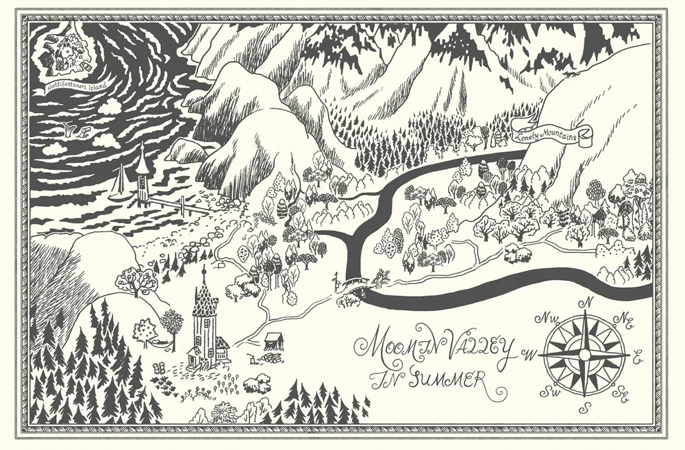
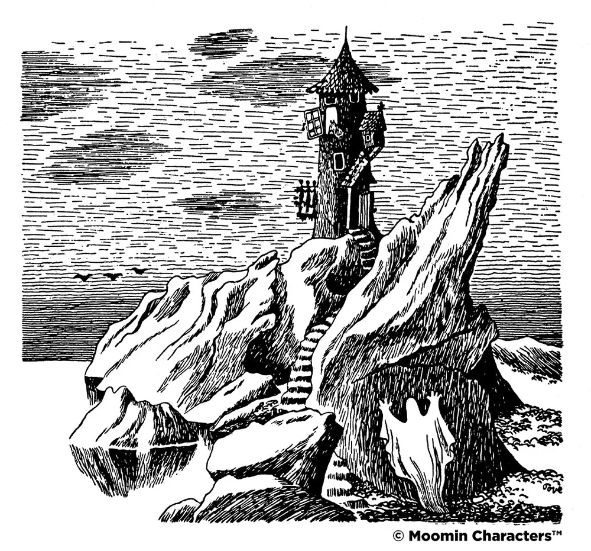

| INICIO | PERSONAJES | CONTACTO |
Los Moomins son los personajes centrales de una serie de libros y una tira cómica de la ilustradora y escritora sueco-finlandesa Tove Jansson, publicada originalmente en sueco en Finlandia. Son una familia de trolls de color blanco y redondeado, con hocicos grandes.
Los libros de los Moomin de Tove Jansson se publicaron entre 1945 y 1993, y se recomienda leerlos en el orden de publicación:
Moominvalley es un lugar idílico y tranquilo donde los Moomins viven en armonía con la naturaleza.
El edificio más grande del valle es Moominhouse, y sus ocupantes dan la bienvenida a todos los visitantes del valle y de más lejos.
